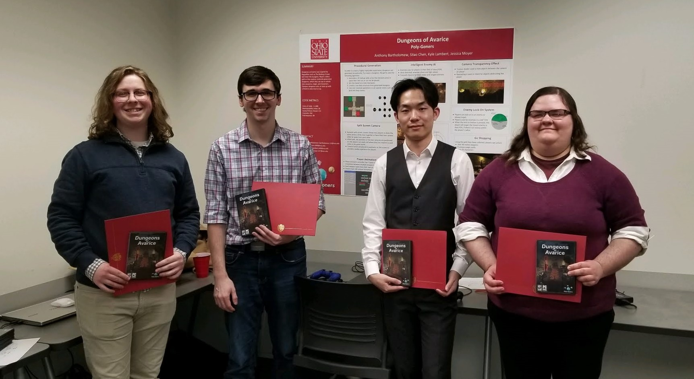

Dungeons of AvariceA semester-long game project developed in the Unity engine. Available for download for free on itch.io
here.
This game was developed throughout my Autumn 2019 semseter at Ohio State as part of the
capstone design requirements for my CSE degree. Designed alongside three classmates,
Dungeons of Avarice provided a challenge in trying to create a fully-featured game in
about three months using the Unity engine. At the end of the semester, our team won the
"Best Game" award as well as the "Most Polished Game" award as voted on by our peers.
The game offers a unique experience in the roguelike genre, featuring a robust
co-op mode which allows two players to explore and survive simulatenously. Players can
face enemies using a variety of melee- and magic-focused combat items. Because levels are
prodcedurally generated, every play-through will provide a new experience.
Below you can read about the development process and design decisions made throughout the
semester. I've also included videos, images, and other diagrams to showcase the tech we
used in bringing Dungeons of Avarice to life. Without further ado, here is our final trailer
for the game.
The course was structured in such a way that allowed us the freedom to create
and design any game that we wanted. Every two weeks (aka a "timebox"), representatives
from each team would present to the rest of the class their progress. As such, each
group would be able to decide their own goals and gameplay mechanics to implement each
timebox. Presentations would include demos, videos, and images.
The teams were decided at the beginning of the semester. Our group consisted of myself,
Anthony Bartholomew, Sitao Chen, and Jessica Moyer. We decided to name our small developer
team "Poly-Goners". In terms of work flow, at the start of each timebox we would meet and
decide on features to be implemented before the next presentation.
Typically, we would use the ZenHub add-on
feature for GitHub to create the required issues and assign them to each memeber of the group.
ZenHub allowed for easy tracking of progress for each task from each team member. It helped
both simulate a professional environment as well as keep us on track for our goals. Through
GitHub, we would create pull requests when we finished features, which allowed the other
group members to test and critique others work before merging it into the game.
From here on I will break up our progress by each timebox. There ended up being a total of seven
timeboxes. At the end of the project, the game contained 11,688 lines of code with a
Visual Studio maintainability index of 80. Over the course of the semester and as a group,
we made 213 issues/tickets, 658 commits, and 89 pull requests.
Timebox 1The first timebox of the project consisted of mainly setting the groundwork for making the game.
We also decided pretty early that
a prodcedurally generated dungeon crawler was an idea everyone was pretty interested in. We
each individually had ideas that we wanted in the game, and we set our goal to include everybody's
ideas.
In terms of the overall idea, we knew we wanted to make a 3rd person fantasy roguelike dungeon
crawler. We decided the dungeons would be randomly generated. A large focus of the design
became revolved around making the game equally fun when playing by yourself or with a co-op
partner. Players would attempt to collect gold while surviving dungeons increasing in difficulty
up until fighting a final boss. Upon death or victory, players would be able to take the gold
they collected back to a hub world where they could upgrade themselves or their weapons and abilities.
We also decided on some more specific components we wanted to include. When playing with a friend,
we wanted the camera to dynamically split as players walked further away from each other (more on
that later). In terms of physics, we knew we would have to account for physics on both players and
enemies. Players would have a variety of control when walking, jumping, or aiming.
Speaking of enemies, each foe would be controlled by its own artificial intelligence. The behavior
would vary depending on the type of adversary found in the dungeons. We wanted them to search for
players in the dungeon. They would utilize the Unity NavMesh for movement throughout the floor.
Our team also wanted to place a greater deal of emphasis on the maintainability of our code. We planned
to use several design patterns to help us achieve our goals. For example, we would use finite state
machines for player actions, enemy actions, and the overall game state. We would use the singleton pattern
for the controller inputs and player driven game objects. We wanted to use factories for enemies and
dungeon generation. Object pooling would also be used for resource management, especially with projectiles.
The command pattern would also be used to control player actions from the user's input.
In terms of actual code and development for this timebox, we set up the general game flow and states.
The game would first load into a basic main menu where the player could start a simple rock rolling game
where the objective was to collect objects in a maze. Players could pause, save their progress, and quit to the
main menu. This simple demo was created using low-poly assets to match the visual style we intended
for the main game.
Timebox 2Throughout the second timebox, we laid out the basic framework for how the game plays. This included
creating a static level, a simple damage system, basic melee and magic based combat, player controls,
the previously mentioned split-screen camera, and a few enemies.
Our static level (shown below) consisted of 7 rooms of varying sizes. It was built to demonstrate what
a potential procedurally generated level would look like later in development. Throughout the rooms we
placed a few of our basic enemies to show off our combat system and AI tracking. The level was large
enough to also test our multiplayer split-screen camera.
In terms of the combat system, we started basic by creating a reusable melee weapon interface. With
this interface, we implemented a sword. The hitbox of the sword only activates and causes damage
while the player is performing the swing animation. A short demo of this can be seen in the video below.
The damage system was designed around two components: Damager and Damageable, where damager
can cause damage on damageable, and damageable can be alerted upon collision with a damager.
The damage system also requires an alignment. Alignment is an enum for complex damage determination.
The damager will cause damage if and only if the damager has different alignments with the
damageable object and these two objects are not either of the players. This system also included
a health bar for display and scriptable objects in the Unity editor for faster configuration by the team.
Because both players and enemies would need to have magic abilities, a magic system was created. Each
object that needed magic could use this system, consisting of five key parts. A "MagicBox" object was attached
to players and enemies, which held all available projectiles. A "MagicPool" would recycle and manage all projectiles,
allowing for easy resource management. Magic ball game objects would store all the visual and damager components.
This projectiles contained the "Projectile" class and a "Damager" class, explained above.
Moving on, we knew we wanted the game to be able to be played with both a keyboard and mouse combo or using a controller.
Because of this, we decided to take advantage of the InControl Unity asset for our input settings.
This allowed for controller profiles, button mappings, and management of up to 10 input devices regardless of the
OS platform. Essentially, keyboard is the default input method. If a controller is connected, then it becomes
the main control method. If a second controller is connected, it is assigned to a second player.
The groudwork for the player animator was also designed during this timebox. Essentially, players would be able to
smoothly transistion between 11 animations was walking or running using the blend tree function of Unity's animator.
There are also animations for dodge rolling in each of the cardinal directions as well as jumping and landing. The
animation the plays is based on the directions that the player is moving and aiming. This animator also consists of two
layers. The base layer controls the movements while a masked layer allows the player to seamlessly attack or take damage
while moving.
The split-screen multiplayer functionality utilized an open source dynamic component found on GitHub. This component was
adapted to our needs. When players are far apart, the screen is divided into two viewports. As players move back
together, the two viewports are merged into one. The video of the intial implementation can be seen below.
Finally, the enemies implemented were all skeletons. They were all based around a finite state machine in which
they would idle and scan for a player nearby. Once the player is in the enemy's sight, it will walk towards the
player and deal damage once within range. A statically baked NavMesh is used for enemy path finding. We excluded
non-moving obstacles like tables and coffins in this demo level.
Timebox 3During the next two week sprint, we moved to beginning the process of procedural dungeon generation. We also
provided an inventory system for each player, as well as the ability to revive the other player if he or she falls
in combat. A heads-up-display was added to show player health, magic, and their current inventory status. The melee
combat received some new weapons and adjustments. The initial hub world was also created with some basic shops.
Treasure chests, gold, and potions were also added to the basic dungeon level.
For dungeon generation, we were heavily inspired by "The Binding of Isaac". As such, we designed around having a
grid-based tile system, in which each tile was a room. Special rooms would be generated betweeen the start and goal,
such as shops. Using our tile system, we could design themed dungeon tilesets which would be used to fill out a
dungeon template. The template would be sent to a dungeon generator object, which would create a valid dungeon
with all required rooms. Under the hood, a lookup table was used to track which locations in the grid contained a room.
The inventory system allowed each player to be able to hold up to two melee weapons, two magic abilities, and one potion.
It also tracks the amount of gold collected so far. The system allows the player to cycle between their items as well as
drop them in order to pick up new objects. The Heads-Up-Display shows the current status of the inventory on screen.
Sliders represent health and mana remaining. Button prompts show players how to use thier items. Pressing the d-pad on the controller
allows players to cycle through items, while holding the d-pad will drop items. Button prompts change based on the current
type of input method and wheter or not it is being currently pressed.
Three new melee weapons were added in addition to the sword. An axe, a spear, and a dagger were added to the demo. Each weapon
has a unique attack animation, which is dynamically swapped in the player animator at runtime.
A basic hub world was added. When players die or defeat the dungeon, they return to this hub world. Here players can buy items
from the shops, including weapons, magic abilities, or potions. The shops were originally set to randomly display four items
from their respective inventories for purchase. At this point in development, you couldn't purchase anything yet.
From the hub, you can re-enter the dungeon.
Timebox 4Throughout the fourth timebox, we implemented some more pertinent game loop features. A win/lose state was created in which players
can die while exploring the dungeon, being brought back to the hub world with half of their gold. If players beat the dungeon,
a portal will appear, allowing them to return to the hub world with all their money. Players can also buy items from the shops now.
Standing over an item in the shop shows a small UI element providing the price and a description of the item.
Improvements to the dungeon generation were made this timebox. New types of rooms were added to the template, allowing for
the creation of shops, dead ends, and the goal room. Designers can also now set spawn chances to each type of room, influencing
the probability for a room prefab to spawn. Each room in the dungeon is now stored in a tree of "Dungeon Nodes". Each node stores
references to its surrounding rooms, its parent node, and the type of room prefab it is. The tree sets special rooms by using depth-first
search to find areas such as the longest path or second longest path.
Additions were made to the HUD to indicate when a player drinks a strength potion and its effect is active. Players also now have a
stamina system. Actions such as attacking, rolling, and jumping are limited based on stamina. Stamina regenerates when players stop
performing any of these actions, a la the "Dark Souls" series. Stamina is represented as a green slider bar in the HUD. If stamina
is too low, actions can not be performed.
In order to improve the combat systems, players can also now lock on to enemies. Previously, you could only lock your aim direction.
An icon is shown above an enemy to let you know which enemy you are locked on to. Pressing lock-on performs a Physics sphere overlap
to find enemies within a set radius around the player. Enemies must also be in front of the player, in his/her 160 degree field-of-view.
The closest enemy in the FOV is locked on to.
In miscellaneous changes, some ranged skeleton mage and archer enemies were added. With dungeon generation, the enemy NavMesh had to be
baked a runtime. After dungeon generation finishes, a NavMesh component is calculated and attached to each room inside the dungeon
with the help of the Unity NavMesh component GitHub repo.
Timebox 5This timebox included lots of smaller but important changes. Most notably, the final dungeon templates that would be used for real dungeon
generation were designed room by room. These templates included a snow world and an outer space themed world. The snow world would eventually be
included in the final game, while the space template was scrapped due to time restraints.
Throughout the semester, we received feedback about the split-screen camera causing confusion, especially while fighting enemies. During
this timebox, we adjusted the camera so it snapped to quadrants on the screen to provide each player a better view of the action. A shader
was also designed to give objects transparency when they block the camera's view of the player. As such, players should be visible at all times.
A dungeon progression tracker was added to the dungeon generation system. This component consists of a simple singlton that keeps track
of how many times the players have beaten a dungeon. After a certain number of completions, the player defeats the dungeon and can return
to the hub. After each completion, the number of rooms generated in the next dungeon is increased. When players complete the challenge in the
goal room, a portal activates allowing for the dungeon to reload.
A door locking and unlocking system was added to each room with enemies. Upon entering a room, players must defeat the enemies there in order
to unlock the doors and procede through the dungeon. We also added smooth transitions between scenes to give the game a more polished feel.
In previous timeboxes, players would pick up weapons and magic when colliding with them. Similar to shops, a prompt now appears when
players get close enough to an item. Players must press the pick up button to equip the item. New UI also shows the power of the item
as well as a short description.
In miscellaneous quality-of-life changes, timers were added to the strength potion icon in the HUD. The lock-on icons were made
distinct colors for each player to make it clear which player was locked on to which enemy. Damage output numbers are shown next
to each enemy's health bar. The number increases for consecutive attacks, but resets two seconds after the last attack. Players are
also now given a small period of invicibility and blink when taking damage now, balancing the combat difficulty.
Enemies' aiming
was improved during this timebox. Items such as potions and gold will disappear after a certain amount of time if they are not picked up.
If one player dies, there is now a limited amount of time for the other player to revive him or her before they permanently die.
Beating the level will bring back a dead player.
Timebox 6As the second to last timebox, this was also the last timebox with a presentation. This timebox was spent fleshing out some of
our final ideas and expanding upon previously implemented systems.
First of all, our hub world was completely redesigned. The old hub world had lots of wasted space and was very unfinished. This new
hub includes transitions to both the castle and snow dungeon levels as well was the three main shops. There is also a room which
stores all the items the players have unlocked along the way. We also added a new main menu with view of new hub world.
Buying melee weapons and magic from shops now permanently unlocks them.
Players can equip any previously purchased melee weapon or magic ability while in the hub world.
Unlocked items are stored in a dictionary. When a player buys a weapon or magic item from the shop, that item is added to
the dictionary. That item's corresponding item spawner is activated if the item it holds is in the dictionary.
Players can then interact with the spawner to add the weapon or magic ability to their inventory.
We also drastically improved the dungeon template. The original dungeon template required too much manual setup for designers.
Overall, the dungeon template was neither scalable nor easy to utilize. The new dungeon template removes all manual set up from
the designers. Now, the Dungeon Template consists of only a single internal room list as opposed to separate lists for top, bottom,
left, and right rooms. It will automatically rotates and create all possible permutations of rooms.
Also, spawn probability of a room only has to be set once now.
We also implemented a tile occlusion system. Previously, we were wasting resources by rendering all tiles off screen.
Unity supports occlusion culling for static content but not procedurally generated content, so we created a simple culling
method to turn off offscreen tiles.
Tiles are occluded when player is within certain distance of the tile.
When players are too far away, the entire tile is set to inactive.
When players are within a minimum distance, the entire tile is set to active.
Enemies can now drop weapons or magic books upon death. Each enemy has a list of possible drops, each with an adjustable spawn
chance. Only one item will be dropped from the list, and it is even possible that they will drop no items.
The combat system received yet another overhaul. The magic system now has a total of eight types of magic, with the four new
spells being consistent pulse magics. Players can hold the magic button to spray a stream of snow, fire, poison, or dark myst.
The game needed variety in the melee combat, so 65 new weapons were added to the game. Weapons were split into nine categories
which are further split into tier lists based on damage output. This lead to massive changes in the player animator.
Previously, the player’s animator would consist of 28 animations. Now there are 180 total animations for each player in accordance
to all the weapon categories. Synced animation layers for each type of melee weapon provides a distinct feel for every swing.
Each weapon also has multiple swinging animations to provide variance to the combat.
To add variety and customization to the gameplay, players may now choose to buy different character models to play as.
The new jail room accessible from the hub will hold all the models that players can buy.
On purchase of a model, the player model will change to the model in the cell. Models are permanently unlocked, so you
can switch back and forth at will.
Timebox 7 & The ShowcaseThe final timebox of the class was spent polishing the game. The castle and snow dungeon templates were fleshed out to
provide gameplay variety. Trap rooms and puzzle rooms were added. A few dragon bosses were added to the end of dungeons
to tie the gameplay experience together. The systems and gameplay loops were play tested and balanced to the
best of our abilites. Our team crunched to provide the best game we could with the amount of time we
had left.
At the end of the timebox, our class attended the university's Capstone Design Showcase. Each team provided stations where
fellow students, faculty, and other visitors could talk to us about our work and play our game for themselves. I think it was
a huge success, and everyone seemed to have a good time playing the game. We even designed and printed box art for the game to
give away to anyone interested. The game is currently available to download for free on the itch.io store page.

None of that would have been possible without the great team that we had. Pictured above at the showcase, from left to right,
that is me, Anthony Bartholomew, Sitao Chen, and Jessica Moyer. Thanks so much to them as well as the course's instructor,
Roger Crawfis.
Available for download for free on itch.io
here. The game can also be found on the course's page
here under "Autumn 2019 Game Groups".